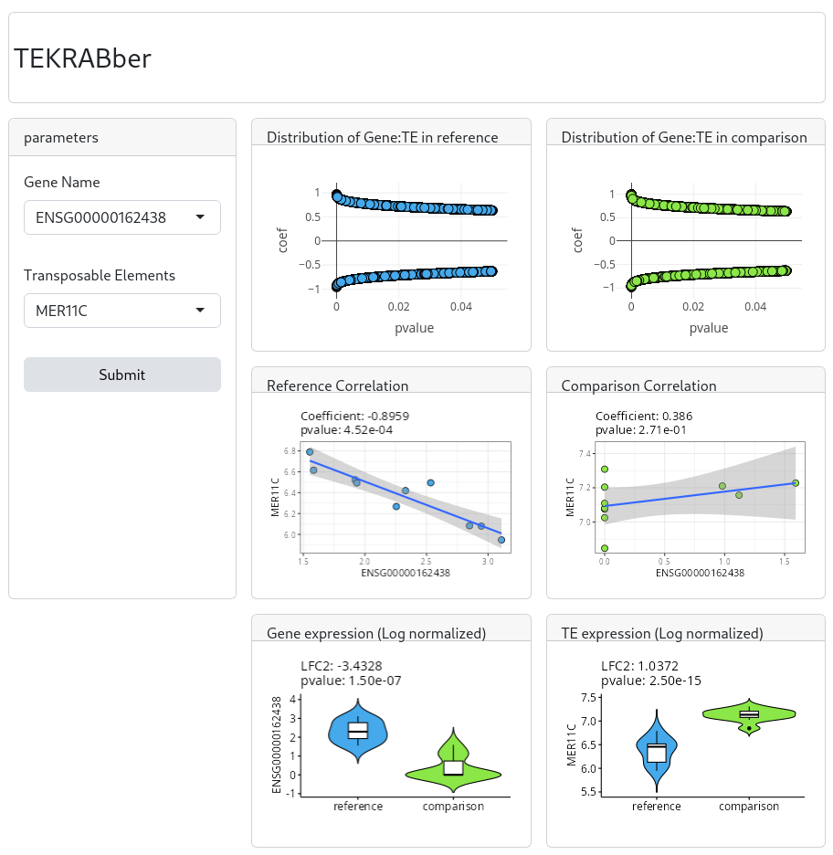

install.packages("BiocManager")
BiocManager::install("TEKRABber")TEKRABber
Bioconductor
R
software
transposable elements
correlation
Introduction
TEKRABber is a Bioconductor package I published early this year (currently rank 925/2266 on Bioconductor) (Chen 2024). It is made to provide a user-friendly pipeline for comparing orthologs and transposable elements (TEs) between two species. It considers the orthology confidence between two species from BioMart to normalize expression counts and detect differentially expressed orthologs/TEs. Then it provides one to one correlation analysis for desired orthologs and TEs. There is also an app function to have a first insight on the result. Users can prepare orthologs/TEs RNA-seq expression data by their own preference to run TEKRABber following the data structure mentioned in the following demo.
Although TEKRABber is developed to compare between species, you can still use it for experiment which compare control and treatment in the same species. If you are more interest in this, you may directly jump to the second half of this article.
Installation
For a stable version, I recommend download TEKRABber from Bioconductor archive.
library(TEKRABber)
library(SummarizedExperiment) # load it if you are following this tutorialExamples
Comparing between two species, human and chimpanzee as an example
Gene and TE expression data are generated from randomly picked brain regions FASTQ files from 10 humans and 10 chimpanzees (Khrameeva et al. 2020). The values for the first column of gene and TE count table must be Ensembl gene ID and TE name:
# load built-in data
data(speciesCounts)
hmGene <- speciesCounts$hmGene
hmTE <- speciesCounts$hmTE
chimpGene <- speciesCounts$chimpGene
chimpTE <- speciesCounts$chimpTE
# the first column must be Ensembl gene ID for gene, and TE name for TE
head(hmGene)Query ortholog information and estimate scaling factor
In the first step, we use orthologScale() to get orthology information and calculate the scaling factor between two species for normalizing orthologous genes. The species name needs to be the abbreviation of scientific species name used in Ensembl. (Note: (1)This step queries information using biomaRt and it might need some time or try different mirrors due to the connections to Ensembl (2)It might take some time to calculate scaling factor based on your data size). For normalizing TEs, you need to provide a repeatmasker annotation table including four columns, (1) the name of TE (2) the class of TE (3) the average gene length of TE from your reference species (4) the average gene length from the species you want to compare. A way to download repeatmasker annotations is to query from UCSC Genome Table Browser and select the RepeatMasker track.
# You can use the code below to search for species name
ensembl <- biomaRt::useEnsembl(biomart = "genes")
biomaRt::listDatasets(ensembl)# In order to save time, we provide the data for this tutorial.
# you can also uncomment the code below and run it for yourself.
data(fetchDataHmChimp)
fetchData <- fetchDataHmChimp
# Query the data and calculate scaling factor using orthologScale():
#' data(speciesCounts)
#' data(hg38_panTro6_rmsk)
#' hmGene <- speciesCounts$hmGene
#' chimpGene <- speciesCounts$chimpGene
#' hmTE <- speciesCounts$hmTE
#' chimpTE <- speciesCounts$chimpTE
#'
#' ## For demonstration, here we only select 1000 rows to save time
#' set.seed(1234)
#' hmGeneSample <- hmGene[sample(nrow(hmGene), 1000), ]
#' chimpGeneSample <- chimpGene[sample(nrow(chimpGene), 1000), ]
#'
#' fetchData <- orthologScale(
#' speciesRef = "hsapiens",
#' speciesCompare = "ptroglodytes",
#' geneCountRef = hmGeneSample,
#' geneCountCompare = chimpGeneSample,
#' teCountRef = hmTE,
#' teCountCompare = chimpTE,
#' rmsk = hg38_panTro6_rmsk
#' )Create inputs for differentially expressed analysis and correlation estimation
We use DECorrInputs() to return input files for downstream analysis.
inputBundle <- DECorrInputs(fetchData)Differentially expressed analysis (DE analysis)
In this step, we need to generate a metadata contain species name (i.e., human and chimpanzee). The row names need to be same as the DE input table and the column name must be species (see the example below). Then we use DEgeneTE() to perform DE analysis. When you are comparing samples between two species, the parameter expDesign should be TRUE (as default).
meta <- data.frame(
species = c(rep("human", ncol(hmGene) - 1),
rep("chimpanzee", ncol(chimpGene) - 1))
)
meta$species <- factor(meta$species, levels = c("human", "chimpanzee"))
rownames(meta) <- colnames(inputBundle$geneInputDESeq2)
hmchimpDE <- DEgeneTE(
geneTable = inputBundle$geneInputDESeq2,
teTable = inputBundle$teInputDESeq2,
metadata = meta,
expDesign = TRUE
)Correlation analysis
Here we use corrOrthologTE() to perform correlation estimation comparing each ortholog and TE. This is the most time-consuming step if you have large data. For a quick demonstration, we use a relatively small data. You can specify the correlation method and adjusted p-value method. The default methods are Pearson’s correlation and FDR. Note: For more efficient and specific analysis, you can subset your data in this step to focus on only the orthologs and TEs that you are interested in.
# we select the 200 rows of genes for demo
hmCorrResult <- corrOrthologTE(
geneInput = hmchimpDE$geneCorrInputRef[c(1:200),],
teInput = hmchimpDE$teCorrInputRef,
corrMethod = "pearson",
padjMethod = "fdr"
)
chimpCorrResult <- corrOrthologTE(
geneInput = hmchimpDE$geneCorrInputCompare[c(1:200), ],
teInput = hmchimpDE$teCorrInputCompare,
corrMethod = "pearson",
padjMethod = "fdr"
)Explore your result using appTEKRABber():
TEKRABber provides an app function called appTEKRABber() for you to quickly view your result and select data that you are interested in. You will need to install gridlayout to run appTEKRABber() function. Note: you might need to installed additional packages to run this function.
remotes::install_github('rstudio/gridlayout')
library(plotly)
appTEKRABber(
corrRef = hmCorrResult,
corrCompare = chimpCorrResult,
DEobject = hmchimpDE
)
The first time you opeining the app, you will see the distribution of Gene and TE alongside pvalue axis and coefficient axis in your reference group and comparision group. You can next select the Gene Name and Transposable Elements which will plot a scatterplot indicating their correlations, and also a expression plot showing the differentially expression analysis. This help you to have a first glance at the pair of Gene:TE which you are interested in.
Comparing control and treatment samples within the same species
If you want to compare selected genes and TEs (1) from different tissue in same species or (2) control and drug treatment in same tissue in same species, please generate all the input files following the input format. Here we show an example data of prepared input files including expression counts from 10 control and 10 treatment samples. The format of input data: row names should be gene name or id, and column name is your sample id (please see details below).
# load built-in data
data(ctInputDE)
geneInputDE <- ctInputDE$gene
teInputDE <- ctInputDE$te
# you need to follow the input format as below
head(geneInputDE)DE analysis
For DE analysis in the same species, you also use DEgeneTE() function, however, you need to set the parameter expDesign to FALSE. You also need to provide a metadata which this time the column name must be experiment. See demonstration below:
metaExp <- data.frame(experiment = c(rep("control", 5), rep("treatment", 5)))
rownames(metaExp) <- colnames(geneInputDE)
metaExp$experiment <- factor(
metaExp$experiment,
levels = c("control", "treatment")
)
resultDE <- DEgeneTE(
geneTable = geneInputDE,
teTable = teInputDE,
metadata = metaExp,
expDesign = FALSE
)Correlation analysis
Here we demonstrate using the first 200 rows of genes and all the TEs to calculate their correlations.
controlCorr <- corrOrthologTE(
geneInput = resultDE$geneCorrInputRef[c(1:200),],
teInput = resultDE$teCorrInputRef,
corrMethod = "pearson",
padjMethod = "fdr"
)
treatmentCorr <- corrOrthologTE(
geneInput = resultDE$geneCorrInputCompare[c(1:200),],
teInput = resultDE$teCorrInputCompare,
corrMethod = "pearson",
padjMethod = "fdr"
)
head(treatmentCorr)Explore your result using appTEKRABber():
remotes::install_github('rstudio/gridlayout')
appTEKRABber(
corrRef = controlCorr,
corrCompare = treatmentCorr,
DEobject = resultDE
)References
Chen, Maupas, Nowick. 2024. “Regulatory Networks of KRAB Zinc Finger Genes and Transposable Elements Changed During Human Brain Evolution and Disease.” bioRxiv. https://doi.org/10.1101/2023.12.18.569574.
Khrameeva, Ekaterina, Ilia Kurochkin, Dingding Han, Patricia Guijarro, Sabina Kanton, Malgorzata Santel, Zhengzong Qian, et al. 2020. “Single-cell-resolution transcriptome map of human, chimpanzee, bonobo, and macaque brains.” Genome Research 30 (5): 776–89. https://doi.org/10.1101/gr.256958.119.